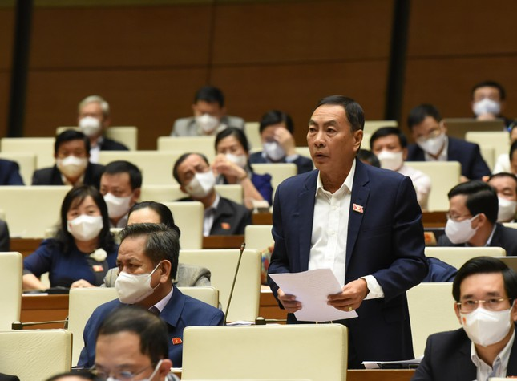
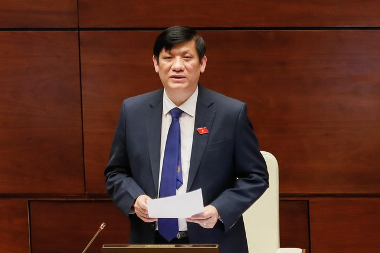

"Loạn" giá xét nghiệm: Có lợi ích nhóm hay không?
Hàng loạt câu hỏi kèm theo tranh luận về “loạn” giá xét nghiệm, cách ly F1 được các đại biểu đưa ra khi chất vấn Bộ trưởng Bộ Y tế Nguyễn Thanh Long, ngày 10/11.
Tại phiên chất vấn, nhiều đại biểu Quốc hội có cùng mối quan tâm đến tình trạng “loạn” giá xét nghiệm COVID-19.
Theo đại biểu Phạm Văn Hòa (Đồng Tháp), giá xét nghiệm vừa qua mỗi nơi một giá, thậm chí có nơi 450 nghìn đồng một lần xét nghiệm. “Liệu có lợi ích nhóm trong việc nhập bộ kit xét nghiệm hay không? Trách nhiệm của Bộ trưởng về việc này?”, ĐB Phạm Văn Hoà chất vấn. Đại biểu Đặng Hồng Sỹ (Bình Thuận) cũng hỏi, vì sao kit xét nghiệm lại chủ yếu là nhập khẩu. Nếu Việt Nam sản xuất được thì đã sử dụng ở địa phương nào?
Trả lời vấn đề này, Bộ trưởng Bộ Y tế Nguyễn Thanh Long cho biết, trang thiết bị y tế và sinh phẩm chẩn đoán trước đây không thuộc mặt hàng quản lý theo Luật Quản lý giá. Giá cả khác nhau do có nhiều hãng, nhiều nước sản xuất và do tính thời điểm. Khi cung ít, cầu nhiều thì giá thành cao hơn, như hồi đầu dịch, khẩu trang, găng tay, máy thở khan hiếm nên bị đẩy giá lên cao. Sau đó, nhiều doanh nghiệp tham gia thị trường nên giá hạ.
“Liệu có lợi ích nhóm trong việc nhập bộ kit xét nghiệm hay không? Trách nhiệm của Bộ trưởng về việc này?”
ĐB Phạm Văn Hoà chất vấn
Loạn giá xét nghiệm: Có lợi ích nhóm hay không? - 1
Khi cung ít, cầu nhiều thì giá thành cao hơn, như hồi đầu dịch. Khẩu trang, găng tay, máy thở khan hiếm nên bị đẩy giá lên cao. Sau đó, nhiều doanh nghiệp tham gia thị trường nên giá hạ.
Bộ trưởng Bộ y tế Nguyễn Thanh Long
Loạn giá xét nghiệm: Có lợi ích nhóm hay không? - 2
Để minh bạch hóa trang thiết bị y tế, theo ông Long, tháng 7/2020, Bộ Y tế đã yêu cầu tất cả công ty kinh doanh phải công khai niêm yết giá, tăng nguồn cung để hạ giá thành. Bộ Y tế cũng liên tục có điều chỉnh về chiến lược xét nghiệm, như hướng dẫn test gộp mẫu, có nơi gộp 20 mẫu để giảm giá thành xét nghiệm PCR.
Theo ông Long, Bộ Y tế đang thúc đẩy sản xuất trong nước, nên khả năng cung ứng kit xét nghiệm cơ bản đáp ứng được nhu cầu. “Chúng tôi cũng thúc đẩy nghiên cứu sản xuất phương pháp chẩn đoán mới như qua hơi thở, nước bọt để giảm giá thành”, ông Long nêu, đồng thời cho biết, Bộ Y tế cũng ban hành Thông tư về giá xét nghiệm, tính giá tối đa của test nhanh là 106.000 đồng. “Nếu đơn vị đấu thầu giá thấp hơn thì chỉ được thu giá thấp hơn”, ông Long khẳng định.
Chưa hài lòng, đại biểu Phạm Văn Hoà cho rằng, ở đây có trách nhiệm và thiếu sót trong quản lý của Bộ Y tế. “Người dân rất phàn nàn việc này, có thể trong một quận thôi mà giá xét nghiệm đã khác nhau rồi. Quản lý nhà nước mà như vậy tôi thấy rất khó. Sắp tới Bộ trưởng có quy định giá mới, nhưng không biết giá này có tham khảo với Bộ Tài chính không? Mặc dù giá xét nghiệm nhà nước đề ra là 106 nghìn đồng, nhưng của tư nhân thì như thế nào? Bộ trưởng có quản lý được giá này không, hay tư nhân muốn làm sao thì làm?”, ông Hoà nói và phản ánh thêm, khi xét nghiệm tại sân bay Tân Sơn Nhất, bản thân ông cũng phải trả mức giá 440 nghìn đồng.
Trả lời chất vấn, Bộ trưởng Y tế tiếp tục khẳng định, đối với các đơn vị y tế tư nhân, không áp dụng hình thức quản lý giá, mà họ tự chịu trách nhiệm nhưng phải niêm yết công khai. “Bộ Y tế đã nhận thấy trách nhiệm này và đã triển khai rất quyết liệt trong thời gian qua. Vì vậy, chúng tôi đã chính thức đưa mặt hàng sinh phẩm xét nghiệm vào mặt hàng quản lý giá”, ông Long nói.
“Va” F0 ở thang máy, chỉ cần cách ly tại nhà
Đại biểu Nguyễn Mạnh Cường (Quảng Bình) cho biết, nhiều cử tri sống ở chung cư lo lắng về việc bắt buộc đưa F1 đi cách ly tập trung mà không xem xét trường hợp cụ thể. Ví dụ, người tiêm 2 mũi, thực hiện “5K” nhưng chỉ tiếp xúc vài giây trong thang máy vẫn phải đi cách ly tập trung 14 ngày, trong khi đủ điều kiện cách ly tại nhà. Ý kiến Bộ trưởng như thế nào về việc này?
Trả lời chất vấn, Bộ trưởng Nguyễn Thanh Long khẳng định đã có hướng dẫn về việc xét nghiệm, cách ly với trường hợp đi từ vùng dịch trở về. Qua đó, người đã tiêm đủ hai liều vắc xin, chỉ cần theo dõi y tế tại nhà 7 ngày và xét nghiệm ngày thứ nhất, với F0 khỏi bệnh cũng tương tự như vậy. Với người chưa tiêm, phải cách ly tại nhà 14 ngày, nhưng còn tùy thuộc vào từng địa phương, khu vực.
Giơ biển tranh luận, ông Nguyễn Mạnh Cường phản ánh: “Nhiều cử tri gọi cho tôi hỏi vấn đề cụ thể nhưng rất phổ biến trong các khu chung cư hiện nay. Cụ thể, người tiêm đủ hai mũi, đeo khẩu trang, không tiếp xúc và chẳng may đi cùng thang máy với F0 thì trong trường hợp này có bắt buộc phải cách ly tập trung hay không?”.
Thừa nhận tình trạng trên xảy ra ở một vài địa phương, trong đó có Hà Nội, Bộ trưởng Long cho biết, đã trao đổi với thành phố, những trường hợp như vậy không bắt buộc phải cách ly tập trung 14 ngày, và trong hướng dẫn của Bộ Y tế cũng nêu rất rõ: “Với những trường hợp này chỉ cần cách ly tại nhà 7 ngày”, Bộ trưởng khẳng định.
Cách ly theo phương thức mới
Làm rõ một số nội dung đại biểu nêu trong phiên chất vấn Bộ trưởng Y tế, Phó Thủ tướng Chính phủ Vũ Đức Đam cho biết, nguồn vắc xin hiện nay đã đủ và sẽ phân bổ cho các tỉnh ở khu vực miền Bắc, miền Trung và Tây Nguyên trong tháng này. Đồng bằng sông Cửu Long và miền Nam, còn thiếu 4 triệu liều thì sẽ phân bổ đủ ngay trong tuần này.
“Bây giờ chúng ta chỉ tiêm, tiêm và tiêm cho an toàn. Trước đây phải đắn đo đối tượng nào, giờ là tiêm gọn từng nơi, từng cụm theo hình thức cuốn chiếu”, ông Đam cho biết, nếu tiêm thật nhanh, Việt Nam sẽ vươn lên thành một trong số rất ít nước có độ phủ vắc xin lớn nhất trên thế giới.
Với việc người dân từ TPHCM về các địa phương, ông Vũ Đức Đam chia sẻ: “Hàng đêm tôi vẫn phải giải quyết cho hàng trăm bà con đi từ TPHCM và Bình Dương về các tỉnh. Giải quyết thông thoáng cũng không được vì hôm sau bà con sẽ về nhiều hơn, mà giữ bà con lại thì day dứt lắm. Tất cả lãnh đạo tỉnh đều vô cùng day dứt, không ai yên lòng được”.
Đáng lưu ý, Phó Thủ tướng cũng thông tin, Chính phủ sẽ mua tập trung kit xét nghiệm với giá rẻ hơn, chủ động cho các địa phương. Khi đó, việc cách ly phải được thực hiện theo phương thức mới để người dân bước vào tình trạng bình thường mới thực sự.
“Do quá bận về công tác phòng, chống dịch cho nên đến tháng 9/2021, khi chúng tôi yêu cầu phải thực hiện theo đúng chỉ đạo của Bộ là phải thực thanh, thực chi, giá test chỉ được thu theo đúng giá đầu vào (tức giá đấu thầu), đơn vị đã nhận lỗi là do mải mê quá cho nên không thực hiện được. Chúng tôi đã yêu cầu đối với các địa phương phải nghiêm khắc nhắc nhở và chấn chỉnh”,
Bộ trưởng Y tế Nguyễn Thanh Long